Las seis cocinas, vistas desde arriba
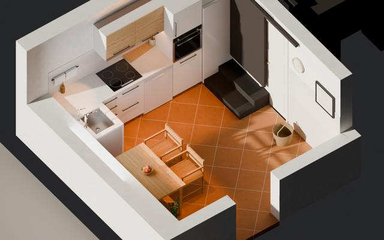
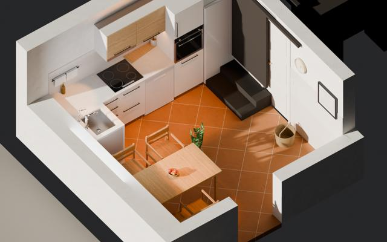
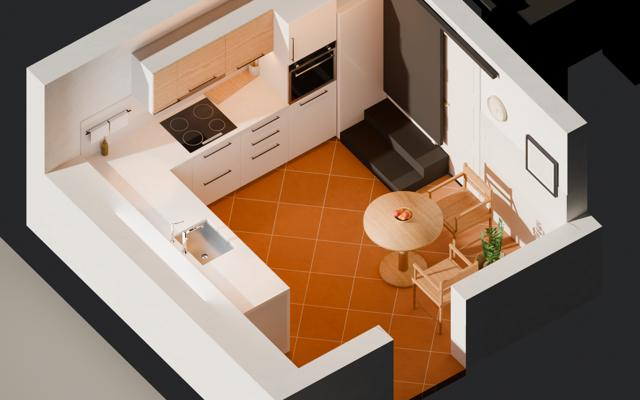
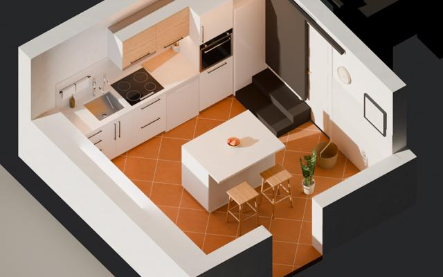
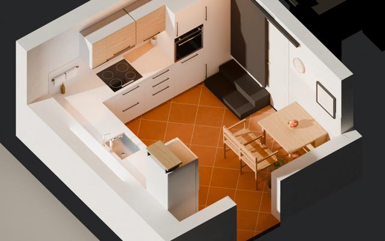
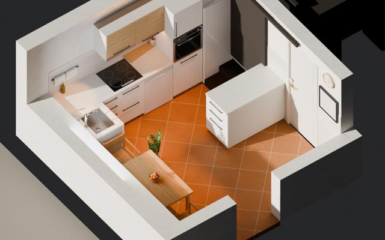
En resumen
- La más barata es la L corta y mesa junto a la ventana: 17.414 € en calidad media.
- La más cara es la Isla pequeña entre la despensa y la bodega: 18.924 €.
- Entre la más barata y la más cara hay 1.510 €.
- Los muebles (con encimera, fregadero, placa, campana, mesa, sillas, luces y montaje) cuestan entre 4.154 € y 8.615 € según la cocina y la calidad.
- La obra (albañil, suelo, azulejo, electricidad y fontanería) es parecida en todas.
- El agua para beber (filtro de ósmosis y anticál) cuesta 1.427 € y es igual en todas.
¿Cuánto cuesta cada una?
MueblesObra e instalaciones · a la derecha, el total (con IVA, sin el agua)
Precios con IVA del 21 %. No incluyen imprevistos (conviene guardar un 10 % más). Las medidas aún no están tomadas con cinta.
1L corta y mesa junto a la ventana
✔ La más sencilla y la más barata. El fregadero va donde ya está el agua y la mesa tiene la luz de la ventana.
✖ Queda poca encimera para trabajar.
Precio de los muebles, en las tres calidades
«Blanco de pueblo»
16.933 €
«Cal y roble»
17.414 €
«Hueso, barro y roble»
20.607 €
Total = muebles + obra e instalaciones (12.779 € · 12.854 € · 13.668 €). Aparte, el agua para beber: 1.427 €.
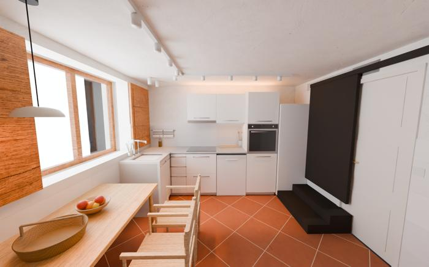
Calidad sencilla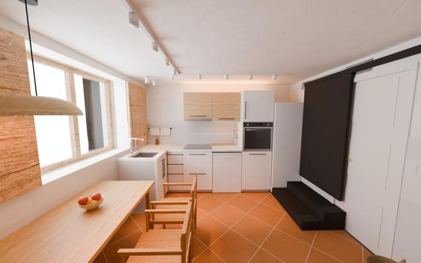
Calidad media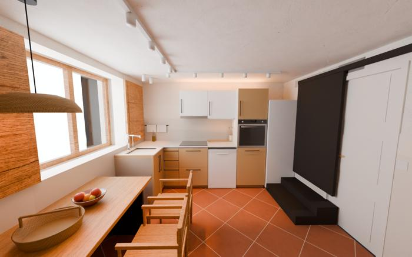
Calidad alta2Barra (península) hacia la puerta
✔ Cuatro sitios fijos para sentarse en la barra.
✖ La barra queda cerca de la puerta de entrada.
Precio de los muebles, en las tres calidades
«Blanco de pueblo»
17.247 €
«Cal y roble»
18.225 €
«Hueso, barro y roble»
20.379 €
Total = muebles + obra e instalaciones (12.779 € · 12.853 € · 13.668 €). Aparte, el agua para beber: 1.427 €.
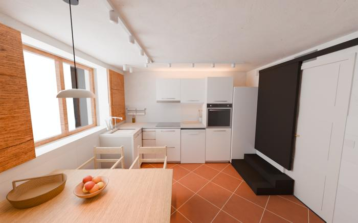
Calidad sencilla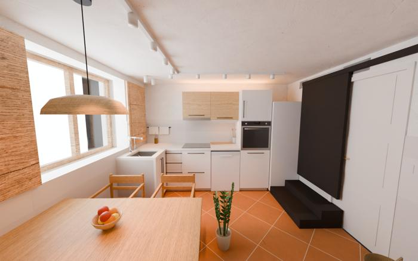
Calidad media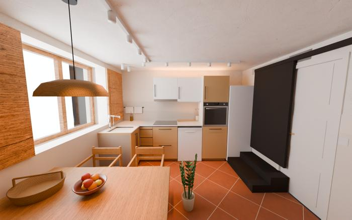
Calidad alta3L con el fregadero bajo la ventana
✔ La ventana queda libre y la mesa pequeña deja paso a la despensa y a la bodega.
✖ La mesa es para dos; con visitas, justa.
Precio de los muebles, en las tres calidades
«Blanco de pueblo»
17.388 €
«Cal y roble»
18.323 €
«Hueso, barro y roble»
20.641 €
Total = muebles + obra e instalaciones (12.552 € · 12.655 € · 13.383 €). Aparte, el agua para beber: 1.427 €.
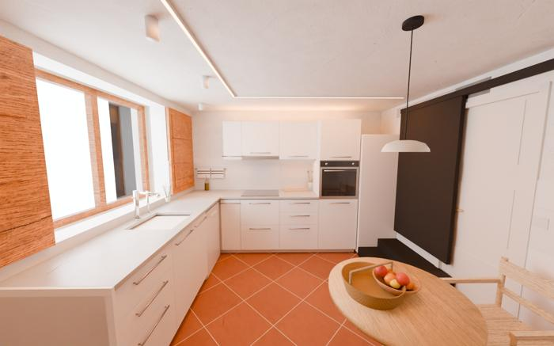
Calidad sencilla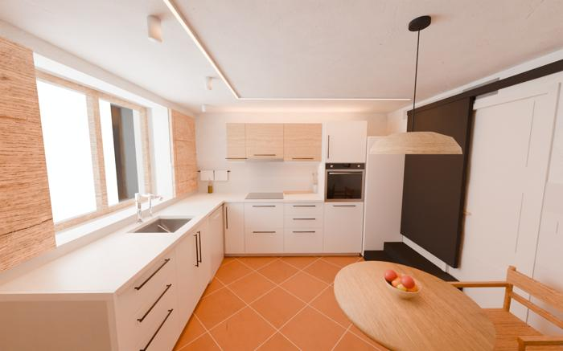
Calidad media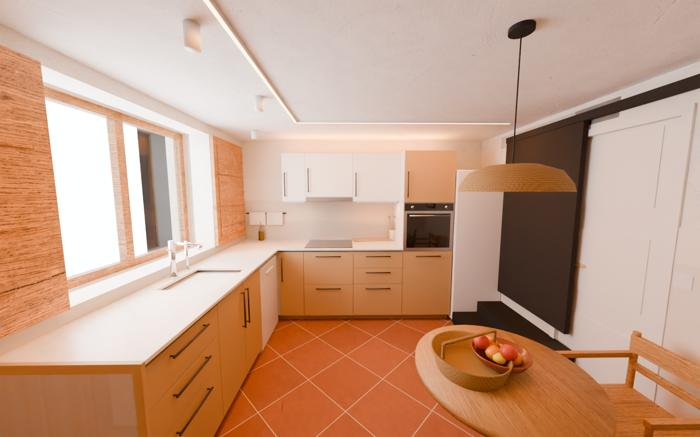
Calidad alta4Isla en el centro
✔ Todo se cocina en una pared, la ventana queda libre y hay isla para desayunar.
✖ Con dos personas cocinando no se cabe bien.
Precio de los muebles, en las tres calidades
«Blanco de pueblo»
17.597 €
«Cal y roble»
18.397 €
«Hueso, barro y roble»
20.283 €
Total = muebles + obra e instalaciones (13.118 € · 13.232 € · 14.047 €). Aparte, el agua para beber: 1.427 €.
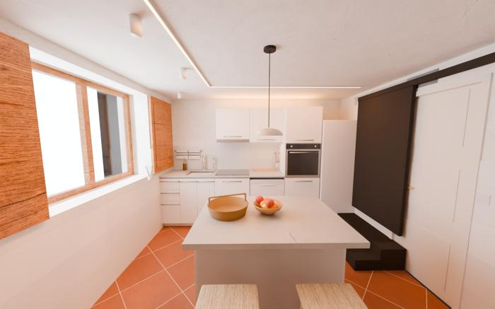
Calidad sencilla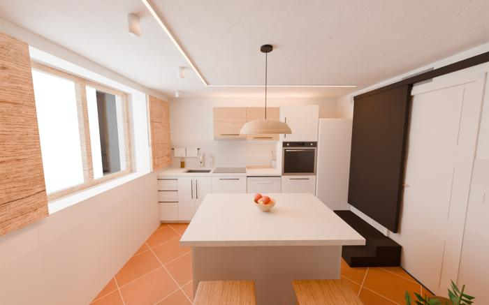
Calidad media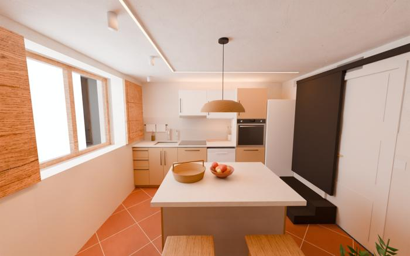
Calidad alta5Horno y despensero juntos, nevera junto a la puerta
✔ Horno y despensero, juntos al lado de la despensa. La nevera, a mano al entrar.
✖ Mesa plegable pequeña. Algo más cara (dos columnas).
Precio de los muebles, en las tres calidades
«Blanco de pueblo»
17.496 €
«Cal y roble»
18.434 €
«Hueso, barro y roble»
20.828 €
Total = muebles + obra e instalaciones (12.469 € · 12.563 € · 13.255 €). Aparte, el agua para beber: 1.427 €.
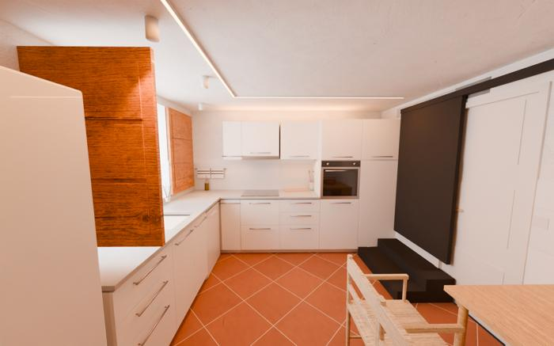
Calidad sencilla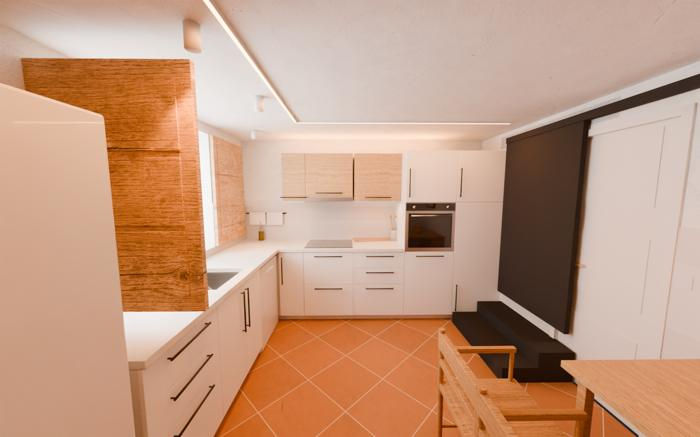
Calidad media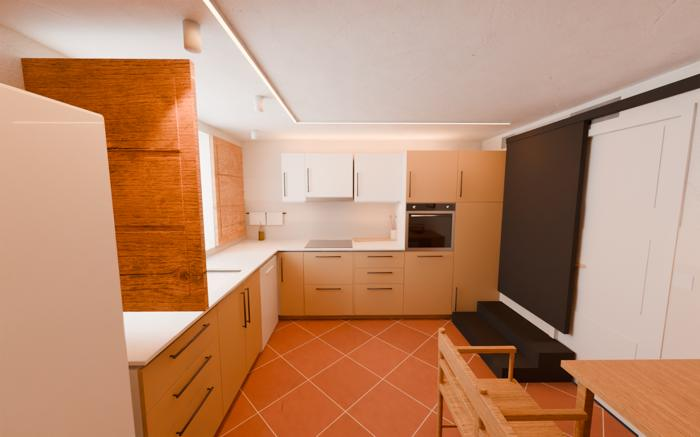
Calidad alta6Isla pequeña entre la despensa y la bodega
✔ Como la primera, pero con una isla de 120 × 60 para apoyar cosas.
✖ Queda algo justo el paso junto a la nevera y el horno.
Precio de los muebles, en las tres calidades
«Blanco de pueblo»
18.283 €
«Cal y roble»
18.924 €
«Hueso, barro y roble»
22.425 €
Total = muebles + obra e instalaciones (12.922 € · 12.995 € · 13.810 €). Aparte, el agua para beber: 1.427 €.
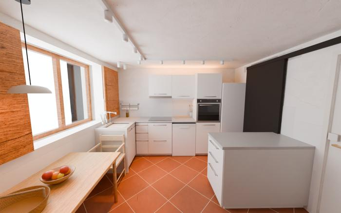
Calidad sencilla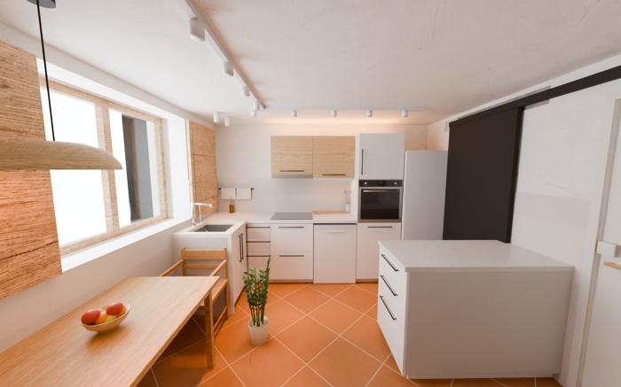
Calidad media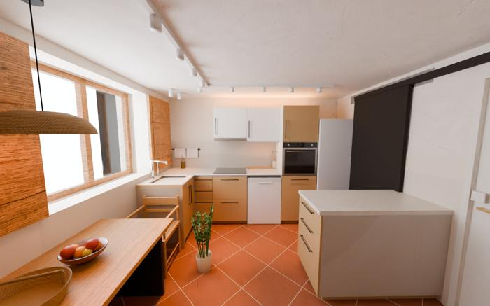
Calidad altaLas cuentas detalladas, partida a partida, están en la versión completa. Las imágenes son dibujos por ordenador de la cocina proyectada, no fotos.